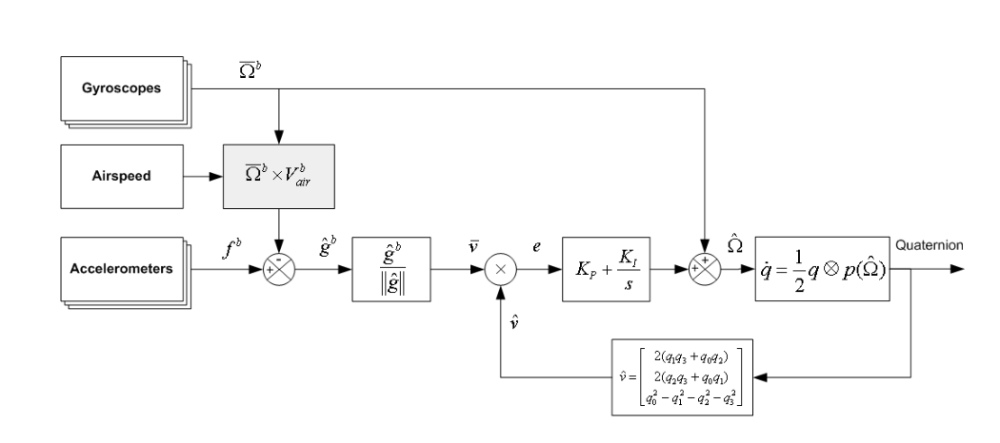

这两天研读了一下Mahony的互补滤波论文A Complementary Filter for Attitude Estimation of a Fixed-Wing UAV，记录一下自己的理解，以备后查。
论文要解决的是固定翼飞机飞行过程中的姿态估计问题。提出了一种基于加速度计和陀螺仪的轻量级、低成本互补滤波算法。算法的核心思想是根据加速度传感器和陀螺仪的特点，进行优势互补，避免各自的不足。并提出了一种向心力模型计算运动加速度，减弱其对重力加速度的干扰。从而得出比较好的姿态估计。
所谓姿态，就是飞机（这里假定传感器坐标和飞机一致）相对于NED（北东地）坐标系所处的方位，包括pitch、roll、yaw。加速度传感器和陀螺仪都可以用于测量姿态，但原理不同。
加速度传感器依靠感知重力确定飞机的姿态。重力垂直于地球表面，指向地心，不因时间的改变而改变。所以加速度传感器测量的是“绝对”姿态，可以说什么时候测都是准的。但是有一个前提，那就是飞机相对于地球静止或做匀速直线运动。但实际应用中，飞机自身会有加速度，并且还有振动，这些影响会叠加到传感器数据中“污染”重力加速度，导致姿态估计不准。
陀螺仪测量的是角速度，飞机运动过程中测量比较准，静止反而不准。所以，受飞机振动的影响较小。理想情况下，记住初始时刻飞机的姿态，通过对角速度进行积分，可以得出其它时间飞机的姿态。由于需要初始时刻的姿态信息，所以陀螺仪只能得出飞机的“相对”姿态。在实际情况中，由于陀螺仪传感器自身的偏移，及一些外在的噪声干扰等，使得长时间的积分存在误差。不能得到准确的姿态信息。
从以上分析可以看出，虽然加速度传感器和陀螺仪都可以用来估计姿态，但由于二者的缺点，只用其中的一种是远远不行的。但可以利用二者的优点将二者结合起来，优势互补，以达到精确估计姿态的目的。论文就是围绕着这一点展开的。
这里边要解决的问题主要有两个，一是如何将两种传感器的数据进行融合，二是如何消除飞行过程中运动加速度对重力加速度的干扰。
初始时刻，由于飞机静止于地面，此时可以通过加速度传感器获取飞机的初始姿态。然后通过陀螺仪数据积分获取飞机的实时姿态，并定时通过加速度传感器数据对其进行校准，以消除陀螺仪数据的积分误差。
论文中采用四元数表示姿态。求四元数的微分方程，可以发现，通过角速度数据可以对四元数进行更新，获取最新的姿态，也是最优估计姿态。
用最优估计姿态与用加速度传感器的量的姿态进行对比，获得二者的偏差。将偏差进行PI运算获得纠正量，用于纠正陀螺仪数据。
数据的融合过程大体就是这样，如下图所示：

图片末端的框图对应的是用角速度更新四元数的过程。最后输出最优姿态四元数。将最优姿态四元数转换成最优加速度矢量$\hat{\mathbf{\upsilon}}$，并与加速度传感器测得的加速度矢量$\overline{\upsilon}$进行比较得出偏差$e$。然后将$e$输入到PI控制器，计算控制量纠正角速度$\overline{\Omega}^b$。得到最优角速度值$\hat{\Omega}$后更新姿态四元数。
PI控制模块中，比例环节用于设置加速度传感器和陀螺仪的交叉频率。对加速度传感器起到低通滤波的作用，可以有效的抑制高频振动对加速度传感器的影响，对陀螺仪起到高通滤波的效果，可以舍去陀螺仪不敏感的转动。积分环节用于消除陀螺仪传感器的偏移。
从图中还可以看出，加速度传感器测的数据$f^b$并没有直接被$\hat{g}^b$拿来使用。而是通过$\overline{\Omega}^b\times{V^b_{air}}$进行了修正。它的目的就是消除飞行过程中的运行加速度，从而更好的还原重力加速度。
论文中只考虑了飞机转向时候的情况。有可能是直线加速的情况对姿态估计影响不大。设计的模型论文中叫向心力模型。大致意思是，飞机转向飞行时有一个向心加速度。向心加速度的大小为角速度和线速度的乘积。角速度可以通过陀螺仪获得。线速度由空速计测量。方向跟飞机的翼面倾斜角度有关。由于对固定翼飞机不熟，也没有细究。
用加速度测量值减去求出的向心加速度作为重力加速度。这样就解决了运行加速度对重力加速度的干扰问题。
最后，为了验证算法效果。作者在一架固定翼飞机上进行了测试。飞机以高速绕圈飞行，查看对转弯时的补偿效果，并与飞机上另一套GPS辅助惯导的系统数据进行了对比。得出比较满意的效果。